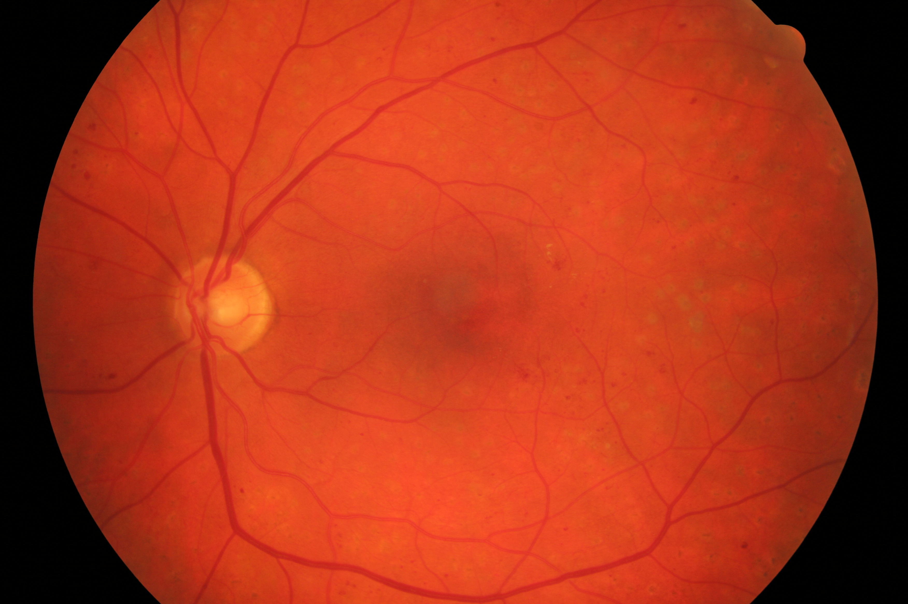

Retinal Vessel Segmentation Demo
Curvelet-guided deep learning for retinal blood vessel extraction from colour fundus images.
DEMO
Input: colour fundus image
Task: vessel segmentation
Model: curvelet-guided U-Net
Output: vessel mask and overlay
DR CASE
TEST CASE
DR original image

Original diabetic-retinopathy fundus image used as input to the vessel segmentation pipeline.